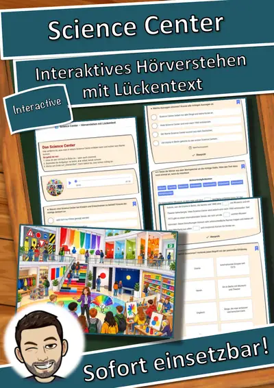
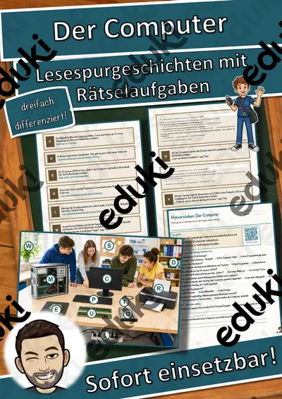
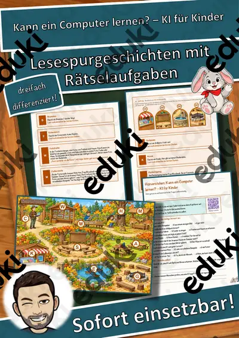

Binärzahlen – die Sprache der Computer aus 0 und 1 – Lesespurgeschichte mit Rätselaufgaben (Klasse 7)
Binärzahlen – die Sprache der Computer aus 0 und 1 – Lesespurgeschichte Informatik (Klasse 7)Schick deine Klasse auf eine Lesespur durch eine Mitmach-Ausstellung! „Alles nur mit 0 und 1? Das glaube ich nicht“, sagt Jaro, als die Klasse 7c das Science Center betritt. Mit Informatikstudent Tom erkunden Noemi und Jaro, wie Computer Informationen darstellen: An der Lichterwand lernen sie das Bit kennen (an = 1, aus = 0) und erfahren, dass Leibniz das Zweiersystem schon um 1700 beschrieb. Am Punktkartentisch legen sie Zahlen aus Zweierpotenzen, am Rechenpult wird binär in dezimal umgerechnet. An der Buchstabenwand werden Buchstaben zu Zahlen und Bytes, an der Pixelstation Bilder zu Nullen, Einsen und Rot-Grün-Blau-Werten. Am Speicherturm geht es um Bit, Byte, Kilobyte, Megabyte und Gigabyte, am Zaubertisch zeigt ein Kartentrick, wie Prüfbits Übertragungsfehler entdecken. Zum Schluss öffnen die beiden einen Codetresor – natürlich mit einer Binärzahl. Am Ende jedes Abschnitts verrät ein Hinweis den nächsten Ort auf dem Plan – nur wer genau liest, findet den Weg und sammelt alle geheimen Buchstaben zum Lösungswort.
Die perfekte Lesespur für den INFORMATIKUNTERRICHT der 7. Klasse – ideal als Einstieg in das Thema Codierung und Binärsystem, für Vertretungsstunden, Stationenlernen und fächerübergreifend mit Mathematik (Zweierpotenzen, Stellenwertsysteme) und Deutsch. Ganz ohne Computer einsetzbar. Das Material ist SOFORT EINSETZBAR und in DREI DIFFERENZIERUNGSSTUFEN (leicht ★ / mittel ★★ / schwer ★★★) angelegt.WICHTIG: Das komplette Material ist sowohl in FARBE als auch in SCHWARZ-WEISS enthalten – ideal zum Sparen von Druckkosten.DAS IST ENTHALTEN
- Lesespurgeschichte in 3 Niveaus (leicht, mittel, schwer)
- farbiger Ausstellungsplan als Suchkarte
- Hörverstehen mit QR-Code zur MP3 (selbstständiges Hören mit Kopfhörern)
- vier Aufträge auf dem Weg: eine Rechenaufgabe (Binär → Dezimal), ein Quiz, eine Zuordnung und ein Steckbrief
- Rätselseite (Wörter-Suchsel + Fragen zu Binärzahlen)
- Ausmalbild zum Thema (Lichterwand und Codetresor)
- ausführliches Lösungsblatt für die Lehrkraft
- alles zusätzlich als komplette Schwarz-Weiß-VarianteSO GEHT DIE LESESPURDie Jugendlichen lesen ab START, finden im Text den nächsten Ort, suchen ihn auf dem Plan und lesen bei dieser Station weiter. An jeder richtigen Station gibt es einen Buchstaben. Eingeplante Sackgassen (Museumsshop, Aufzug, Schließfächer, Sitzsackecke) sind keine Stationen und dienen der Selbstkontrolle. Am Ende werden die gesammelten Buchstaben umgestellt und ergeben ein geheimes Lösungswort. (Die Lösungen sind selbstverständlich nur im Lösungsblatt für die Lehrkraft enthalten.)INHALTLICHER SCHWERPUNKTBit als kleinste Informationseinheit, Zweiersystem und Stellenwerte, Umrechnen zwischen Binär- und Zehnersystem, Zeichencodierung und Byte, Pixelbilder und Farbwerte (RGB), Speichergrößen von Bit bis Gigabyte, Fehlererkennung mit Prüfbits, ein Blick in die Geschichte (Leibniz).ABGEDECKTER LEHRPLAN (Klasse 7, Informatik)
- Informatik / IT (LehrplanPLUS Bayern) – Information und ihre Darstellung: Binärsystem, Bit und Byte, Codierung von Zeichen und Bildern, Speichergrößen, Fehlererkennung.
- Mathematik – Jahrgangsstufe 7: Zweierpotenzen, Stellenwertsysteme, Kopfrechnen.
- Deutsch – Lesen: Sachtexte sinnentnehmend lesen; Zuhören: einem Hörtext folgen (Hörverstehen mit MP3).
- Medienbildung: verstehen, wie digitale Geräte Informationen speichern.
Geeignet für Freiarbeit, Stationenlernen, Vertretungsstunden, Wochenplan und Projekttage. Klassenstufe 7 (auch 6 und 8).
Ähnliche Materialien

Science Center Lückentext mit Wortspeicher Hörverstehen und Suchsel

Science Center – Hörverstehen mit Lückentext (interaktiv)

Der Computer – Lesespurgeschichte mit Rätselaufgaben (Klasse 7)

Kann ein Computer lernen? – KI für Kinder – Lesespurgeschichte mit Rätselaufgaben (Klasse 3)

Computer Lückentext mit Wortspeicher Hörverstehen und Suchsel

Prüfziffern – wie Computer Tippfehler erkennen – Lesespurgeschichte mit Rätselaufgaben (Klasse 7)

EDV/Informatik/Word: Tabelle und Tutorial